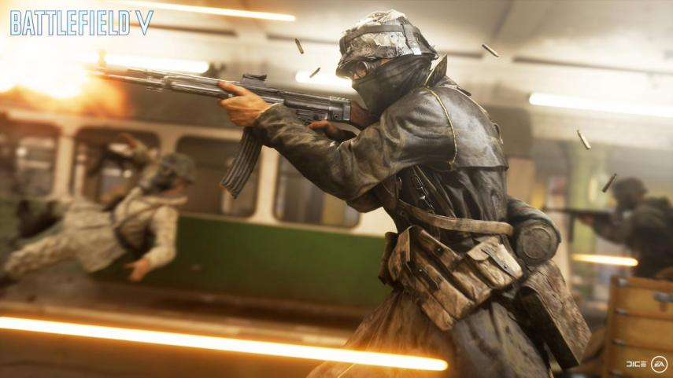

Los juegos de PC con mayores requerimientos solo para los equipos más potentes

Los gráficos son una de las características más importantes a la hora de valorar un título y está claro que cada vez evolucionan más y más. Hoy repasamos unos cuantos juegos que se caracterizan por ser excelentes a nivel técnico.
No todo el mundo tiene un buen PC, pero si es tu caso, quédate a la leer estas líneas porque te pueden venir bien. Está claro que un PC de alto rendimiento es la mejor manera de disfrutar de los videojuegos si lo que te apasiona son su cualidades gráficas y técnicas.
Cada vez más y más desarrolladoras focalizan sus esfuerzos en hacer juegos que resulten impecables a la vista y para poder sacarles el mayor partido posible necesitamos un buen PC que lo soporte. A continuación, vas a encontrar un lista con algunos de los juegos más exigentes. Acomódate y disfruta de los 10 juegos de PC con mayores requerimientos solo para los equipos más potentes. Prepara tu tarjeta gráfica.

Project Cars 2 es uno de los juegos de conducción de más calidad atesoran dentro del mercado actual. El título de 2017 parece no envejecer gracias a su impecable calidad gráfica. Este título ofrece una amplia selección de más de 170 coches con licencia de las marcas más icónicas del mundo del motor, y soporte para realidad virtual y 12K a 60 fps.
The Witcher 3 no podía faltar en esta lista. El título de CD Projekt Red es uno de los más representativos y queridos de esta generación por razones obvias. Pese a ser ya un veterano, el sistema de iluminación de este juego revolucionó la concepción de la luz en los sandbox y nos trajo una belleza difícil de superar.
¿Os gustaría vivir de primera mano, la experiencia de estar en un campo de batalla? Battlefield V es lo más cerca que vais a estar de hacerlo y ya decimos que, con el equipo adecuado, es como estar en los grandes frentes de la Segunda Guerra Mundial en persona. La destrucción de escenarios, unas físicas espectaculares y una iluminación que se ríe de la realidad son la excelente carta de presentación de este título de DICE.
Kingdom Come Deliverance tiene horas de juego para aburrir y unos requisitos que no se pueden tomar a la ligera. Este RPG de corte medieval cuenta con un motor gráfico Dunia que se basa en realidad en el motor CryTek desarrollado para el famoso Crysis, otra de las joyas técnicas que han hecho historia dentro de la industria.
DICE se vuelve a colar en esta lista con Star Wars Battlefront 2, título que nos ha mostrado el universo de esta popular franquicia de la mejor manera posible. Su iluminación, texturas y explosiones están cuidadas hasta el más mínimo detalle, algo que siempre es de agradecer.
| Juego | Memoria | Procesador | Tarjeta Grafica | Edición | Eliminar |
|---|